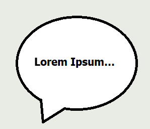
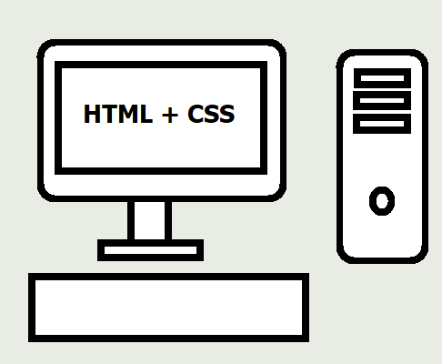

HABILIDADES
COMUNICAÇÃO

A cada ano que passa, a importância de saber se comunicar bem fica cada vez mais evidente no cenário tecnológico. Com isso, o candidato acredita que possui características de um comunicador e que consegue expor suas opiniões de uma forma organizada.
| |
TRABALHO EM EQUIPE E APRENDIZAGEM
O trabalho em equipe em si já apresenta muitos desafios, pois há questões particulares que acabam sendo um problema dentro do time de trabalho. Porém, existem muitas oportunidades de aprender coisas novas e de conhecer experiências e ideias diferentes, o que pode ajudar tanto na formação pessoal e profissional dos integrantes da equipe.
| |
CONHECIMENTO TÉCNICO

Um pouco mais técnico agora, o candidato não se considera um "expert" ou um especialista em nenhum assunto, ou em uma linguagem, mas ele possui a vontade de querer aprender cada vez mais sobre a área de programação e outras áreas anexas a ela.
|